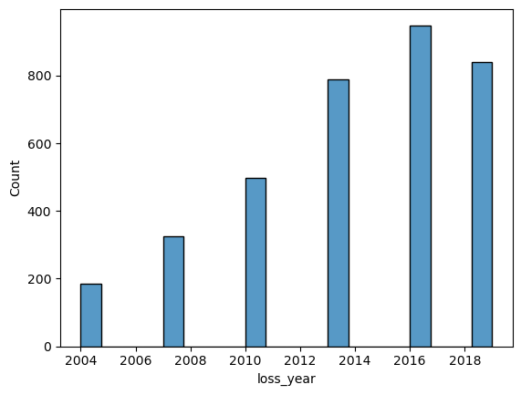

This project analyses mangrove forest loss in the Ambanja and Ambaro Bays (AAB) region of Madagascar using the Murray Global Tidal Wetland Change dataset. Deforestation raster data was converted to vector format, cleaned, and analysed using arcpy to quantify mangrove loss by administrative unit and proximity to roads and rivers. The project situates the analysis within the broader context of REDD+ conservation goals and Enhanced Forest Inventory frameworks.
arcpy| File | Description |
|---|---|
Murray_Mangrove_Loss_Year.tif | Murray Global Tidal Wetland Change raster — mangrove loss year 1999–2019 |
AAB.gdb | Geodatabase containing commune, fokontany, paths, and permanent river features for the AAB region |
| Library | Purpose |
|---|---|
arcpy | Raster-to-vector conversion, spatial analysis, cursors, and field management |
pandas | Tabular data handling and export |
seaborn | Histogram visualization of temporal loss trends |
The Murray mangrove loss raster was converted to polygons using arcpy.conversion.RasterToPolygon. The gridcode field was renamed to loss_year and zero-value (no-data) polygons were removed using an UpdateCursor. A histogram of loss year was generated to visualize temporal trends. Spatial intersections with commune and fokontany boundaries were used to calculate total lost area (km²) and average loss year per administrative unit, exported as Excel files. Multiple ring buffers at 1,000 m, 2,000 m, and 5,000 m were created around permanent rivers and paths, and mangrove loss within each buffer ring was quantified separately to assess distance-decay relationships.

Histogram showing temporal trends in mangrove deforestation across the Ambanja and Ambaro Bays region (1999–2019)
arcpyarcpy cursors (UpdateCursor, SearchCursor)pandas DataFramesseaborn histogramsarcpy